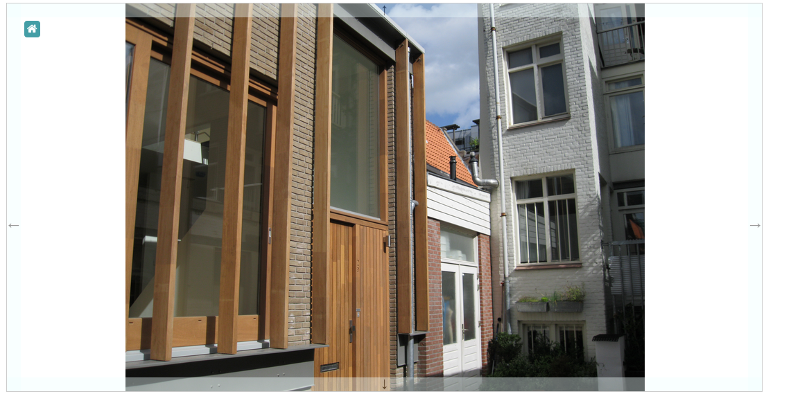

This is an example of how to use the Surface widget from the Toolkit to display a pannable and zoomable image.

The code for this demonstration is straightforward:
jsPlumbToolkit.ready(function() {
// pick a random image from the list
var images = ["img/IMG_0685.JPG", "img/tramlineparis.jpg"],
image = images[Math.floor(Math.random() * images.length)];
// get a new Toolkit instance
var toolkit = jsPlumbToolkit.newInstance();
// render to 'canvas' element, supplying URL to background, and indicating we want to clamp the panner to always keep the background partly in view.
var renderer = toolkit.render({
container:"canvas",
background:{
url:image
},
clampToBackground:true
});
// on home button click, zoom to fit background.
jsPlumb.on("#main", "click", "[reset]", function () {
renderer.zoomToBackground();
});
});
Note the clampToBackground:true parameter. This instructs the widget to clamp pan/zoom movement such that some
portion of the background image is always visible.
By default, the Surface widget displays nudge bars to assist the user in navigating the dataset. These can be hidden, as discussed here.
This demonstration uses a fixed background, but if you are dealing with large images you may wish to investigate the Surface widget's tiling capabilities.